| 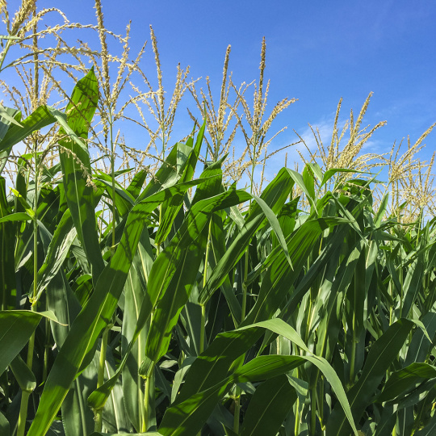 | Inspection et analyse des cultures
Analyser les cultures et vergers depuis le ciel pour évaluer et optimiser leur santé |
Inspection et analyse des grandes cultures Optimiser les choix et les déplacements pour une meilleure santé des cultures Grâce à sa solution clé en main, Parrot permet aux agriculteurs de surveiller leurs cultures depuis les airs en procédant à des vols de drone ne demandant aucune connaissance en pilotage. |
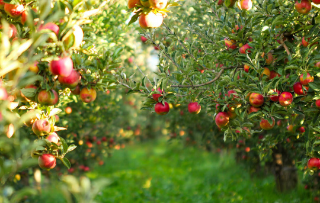 |
| CONNECTÉ
Les logiciels de l'Ag 360 (eMotion Ag et Pix4Dfields) sont entièrement compatibles avec les systèmes informatisés de gestion agricole (FMIS) et avec les machines agricoles de précision. |
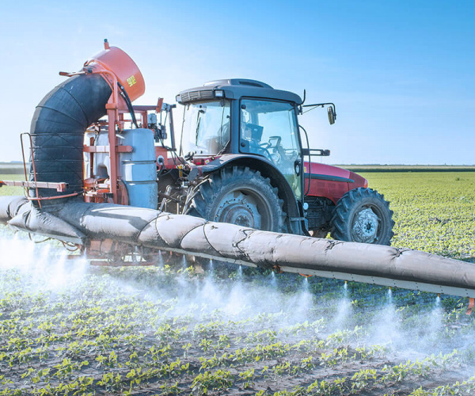 | 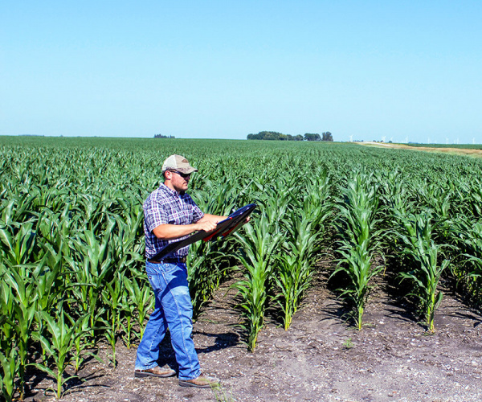 | PRENDRE DES PHOTOS
Voler afin de prendre des images multi spectrales détaillées Jusqu'à 200 ha (500 ac) par vol à 120 m/400 FT au-dessus du sol (1200 ha/2965 ac par jour |
| 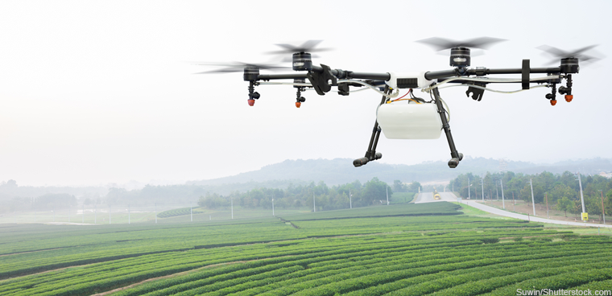 | EFFICACE
Maintenez la rentabilité de votre entreprise, spécialement lorsque les prix des produits de base sont bas, en utilisant des données drone afin d'optimiser les rendements et réduire les apports Des cartes-index très précises améliorent votre connaissance du terrain en vous aidant à identifier et à traiter plus efficacement les problèmes |
JUDICIEUX
Un drone fournit une perspective unique, que ce soit en surveillance d'évènement, évaluation de la vigueur ou dépistage de maladies L’imagerie multispectrale précise de l’eBee SQ, combinée au Pix4Dfields, peut aider à détecter à l'avance des problèmes |
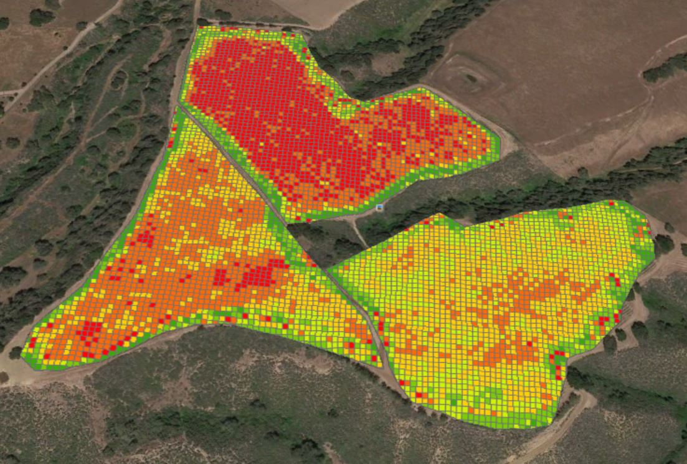 |
| UN DRONE EBEE SQ
Durée de vol jusqu'à 55 mn Couverture jusqu'à 500 ac (200 ha) par vol de 55 mn à 400 ft (122 m) au-dessus du sol Caméra multispectrale Sequoia |
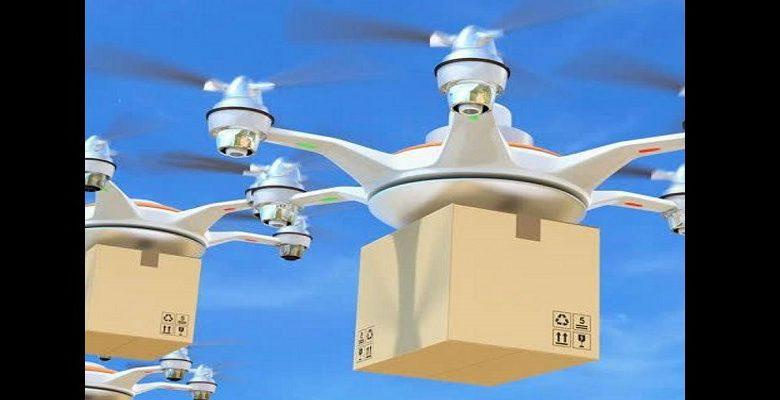 | 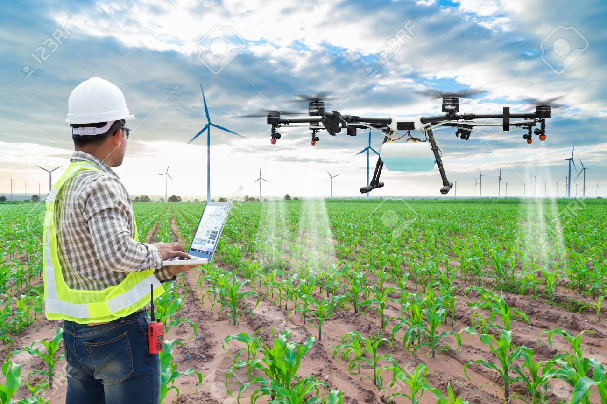 | RAPIDE
Des données le jour-même : pas besoin d'attendre après un avion avec pilote ou une imagerie par satellite L'eBee SQ est prêt à être lancé en deux minutes Cartographier jusqu'à 10x plus par vol qu'avec des petits drones multirotors |
| 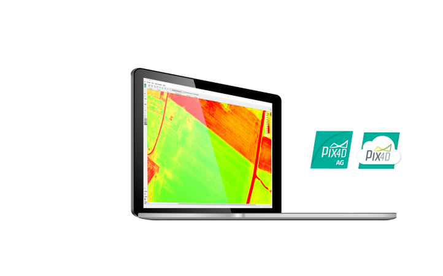 | UN LOGICIEL DE TRAITEMENT D’IMAGES PIX4DFIELDS
Traitement des photos prises par le drone Génération de cartes-index précises Export de prescriptions lisibles par machine |
Logiciel agricole de planification de vol eMotion Ag
Assistance FMS complète Import des limites des parcelles Vols multi-champs Projets multi-champs |
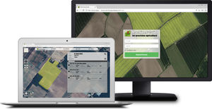 |
| PLANIFIER
Définissez les zones que vous souhaitez observer Surveillez un ou plusieurs champs lors de chacun de vos vols |
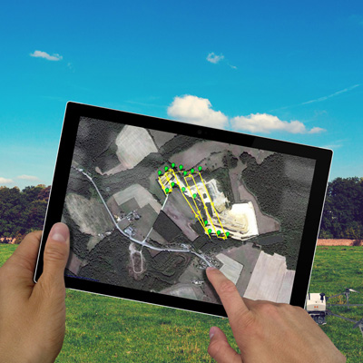 | 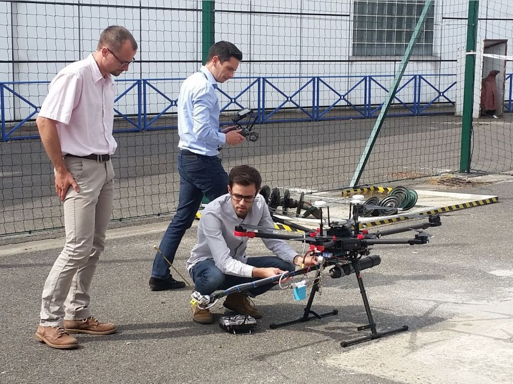 | AGIR
Prévoyez une autre vérification sur le terrain ou des prélèvements de sol, ou démarrez le traitement immédiatement Connaissez votre culture, agissez tôt |